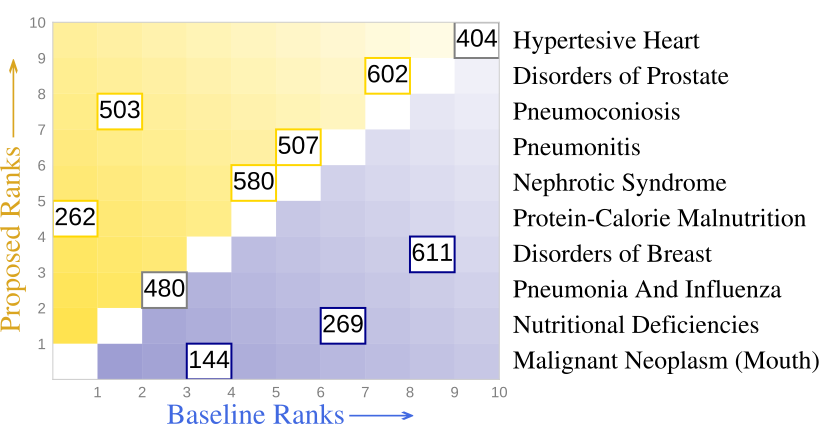
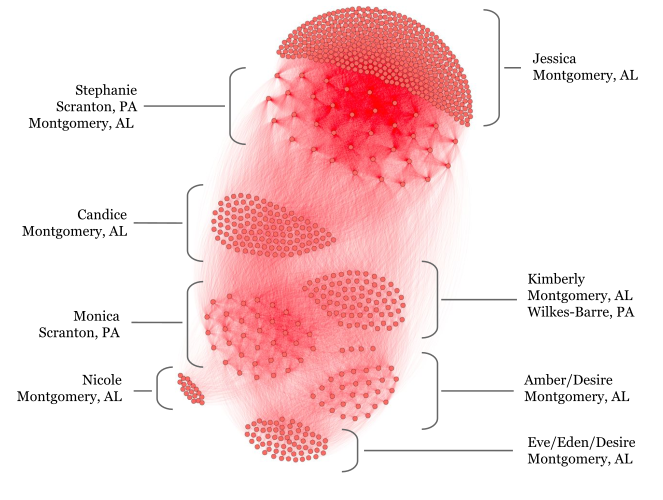
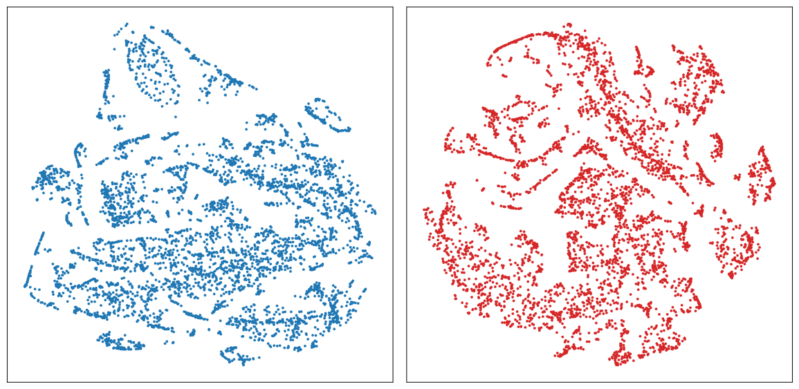
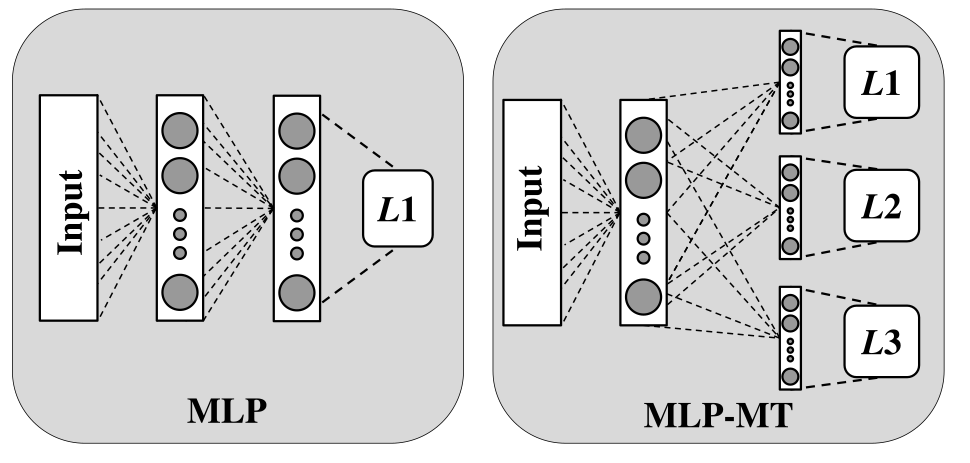
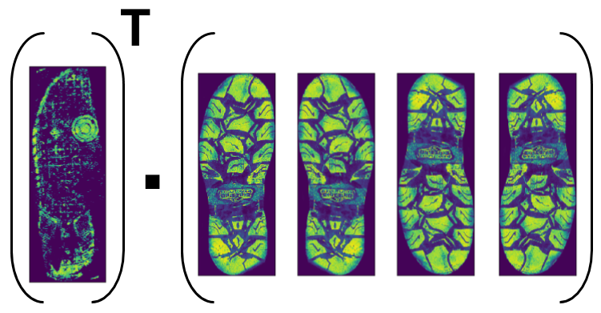
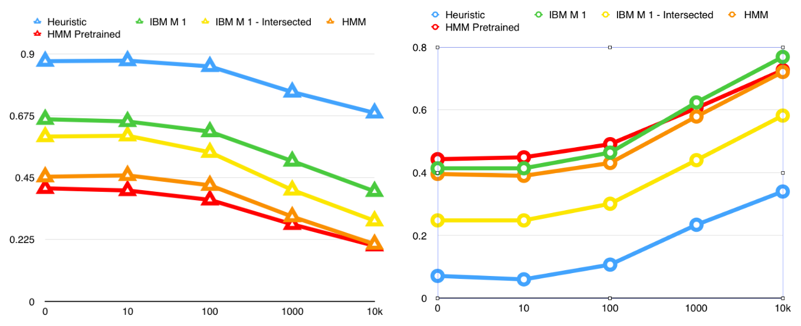
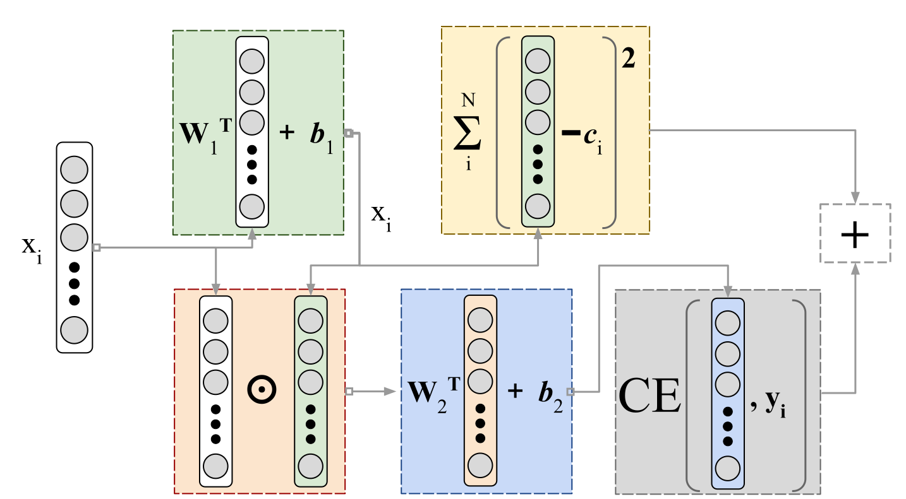
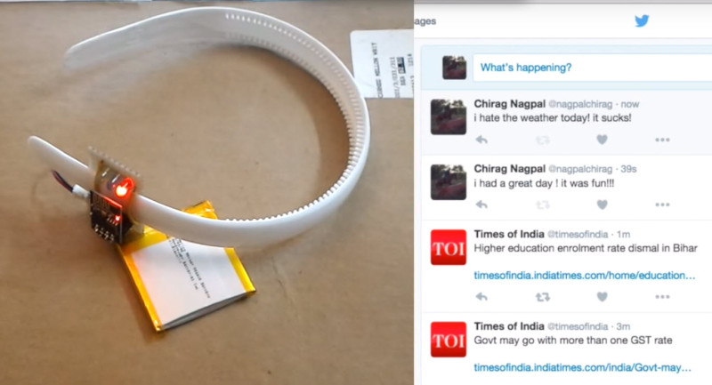
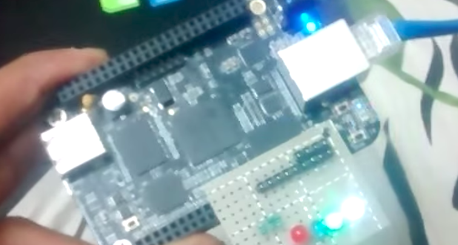
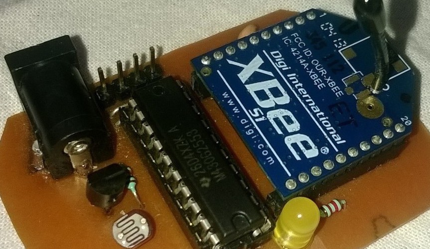

Research
KB-ASearch: Interpretable Active Search with Knowledge Bases [pdf]
In Submission, WWW '18
We approach the problem of Active Search at the granularity of entities present in the document corpus, as opposed to defining explicit similarity kernels to the documents. We show our approach is scalable, and allows flexibility in supervising the entities. We also propose heuristics as exploratory criteria for the search task.
Semi-Supervised Prediction of Comorbid Rare Conditions [pdf]
Oral Presentation at DMBIH, IEEE ICDM '17
Joint Work with UPMC Dept. of Critical Care MedicineWe propose a Machine Learning Pipeline that explicitly exploits the inherent Hierarchy of ICD-9 Codes, resulting in an interpretable model that has better predictive performance for Rarer Medical Conditions like Venous Thrombo-embolism.
Entity Resolution to Isolate Instances of Human Trafficking Online [pdf]
Oral Presentation at Bloomberg Data 4 Good Exchange (D4GX) '17
Paper in Workshop on User Generated Noisy Text, ACL EMNLP '17We mined data from over 4M Publicly Available Escort advertisements, and constructed data driven pipeline to perform Entity Resolution and isolate solicitors. Then then utilized supervised machine learning to classify these resolved entities as being indicative of trafficking, with prior ground truth.
Challenges and Hackathons
Exploratory Analysis of Genomic Data from Cancerous and Healthy Populations [pdf] [press]
First Place Cash Award of $20k at Citadel Datathon '17
We analyzed Gene Expressions in Multiple Tissues from Populations of Healthy and Cancerous individuals using the GTEx and TCGA datasets and exploited unsupervised techniques like stochastic neighborhood embeddings to featurize the gene expressions in a non parametric setting. We also proposed rank order based features, and finally built classification models, over the expression levels, to classify there source. Our team was the winning entry and received a Cash Prize of $20k
Cross Domain Persona Linking Credit Card Hackers on Online Forums [pdf] [code]

Deliverable for DARPA MEMEX and the FBI
Competitively Outperformed Teams from Leading Academic and Industrial PartnersFor DARPAs MEMEX Quarterly Program Review, we presented personaLink A Python tool to extract features from, and train supervised classifiers for Pairwise classification of users across Internet Forums. personaLink was applied on Credit Card hacking forums with limited ground truth, and outperformed top MEMEX participants.
Course Projects
Joint Modeling of Electronic Health Records and Clinical Notes [pdf]
Submitted to ML4H NIPS '17
CS-LTI-747 Final ProjectWe investigate Deep Multi-modal Techniques to Model the Course Time Series of Electronic Health Records. Here are Modalities being ICD Codes in subsequent admissions, along with the Clinical Notes. We empirically evaluate the performance of a model trained jointly on the modalities, using the popular MIMIC-III Dataset
Crime Scene Footprint Matching for Recidivism Prediction [pdf]
CS-MLD-701 Final Project
Footprints form a crucial piece of evidence in crime scenes, which forensic experts and law enforcement agencies depend on to build incriminating evidence against a suspect, especially in cases of recidivism. In this project we describe a system to perform
1) Footprint Detection, to detect if the print belongs to the right or left foot, and
2) Footprint Matching, that is given prior footprint data aims to match newer footprints. We further extend this work by performing some analysis and exploration, and pattern discover using some Machine Learning Techniques.
Exploration and Implementation of Classical NLP Systems
CS-LTI-711 Assignments & Projects
Implemented Classical Large Scale NLP systems including, Language Modeling, Parsing and Statistical Machine Translation as part of Intro-NLP Course
1) Experimental Exploration of Trigram Kneser-Ney Language Models [pdf]
2) Parsing with Unlexicalised Probabilistic Context Free Grammar [pdf]
3) Reranking Probabilistic Parses with Supervised Learning [pdf]
4) Comparative Study of Word Alignment Models for Machine Translation [pdf]
Personal & Independent Projects
Towards Deep Interpretable Models with Sacrificial Losses
We investigate the use of secondary loss functions, to regularize model objective, while at the same time constraining the model architecture to learn a more interpretable embedding for the Training data. Empirical results with shallow networks on MNIST show that the model learns a saliency map like layer, enhancing performance as compared to standard models with similar number of parameters. The applicability to more challenging tasks with deeper architectures is currently being investigated.
Selected Undergraduate Projects
( Complete List of Undergraduate Work from Old Webpage: [link] )
Sentiband - The Hairband that knows your mood! [link]
Featured on HACKADAY.com [link]
An attempt to exploit social media using Natural Language Processing, to exhibit a users Cognitive State through a Physical Nnterface. In as much, Sentiband is a humble attempt to demonstrate how modern technology bridges mulitple pardigms of Computer Science, Human Computer Interaction and Cognitive Science.
Sentiband exploits Twitter activity to perform Sentiment Analysis, and Light corresponding to the perceived sentiment.
SatLight - Keep An Eye on the Sky! [link]
Featured on DangerousPrototypes.com [link]
A Prototype motivated from the Internet of Things paradigm, SatLight is a handheld that connects to the Internet with an Ethernet Connection, using an open source Linux Board, and polls the NORAD Database to track the ISS and other satellites using there corresponding Two-line Element Set (TLE) values.
Low Power Wireless Sensing with TI-MSP430 [link]
Featured on HACKADAY.com [link]
Featured on DangerousPrototypes.com [link]
Featured on The Official Texas Instruments Blog [link]We exploit TI's Low Power MSP-430 Microcontroller along with the ZigBee transrecievers to create a Wireless Mesh based Environmental Sensing module.